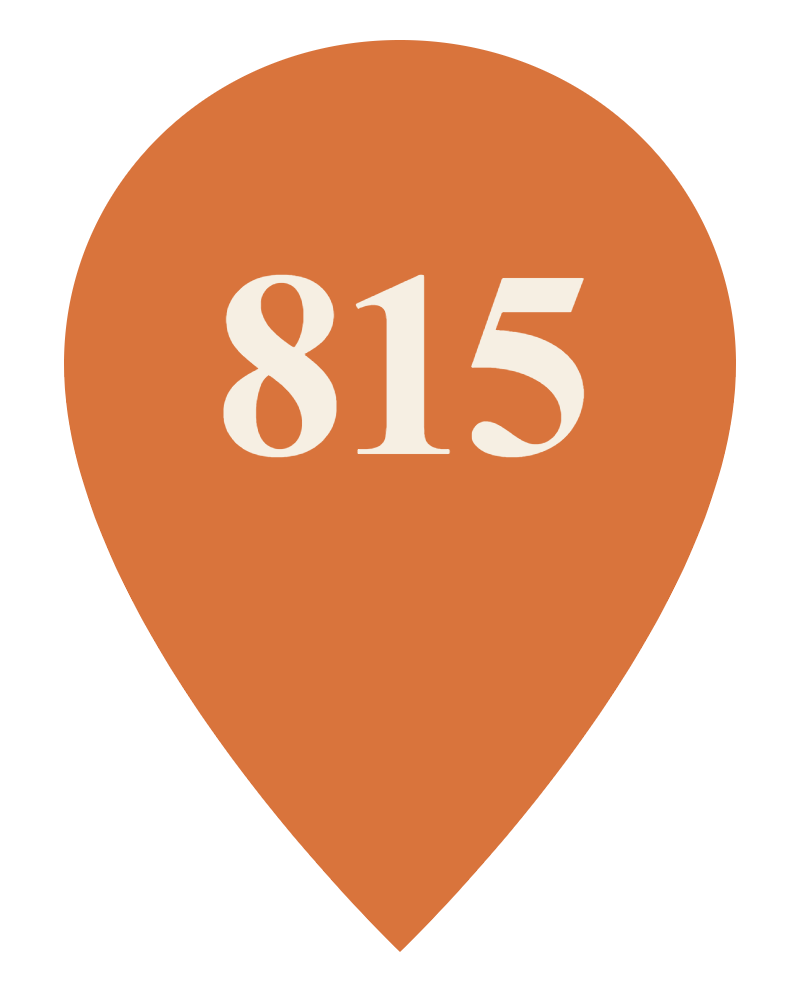
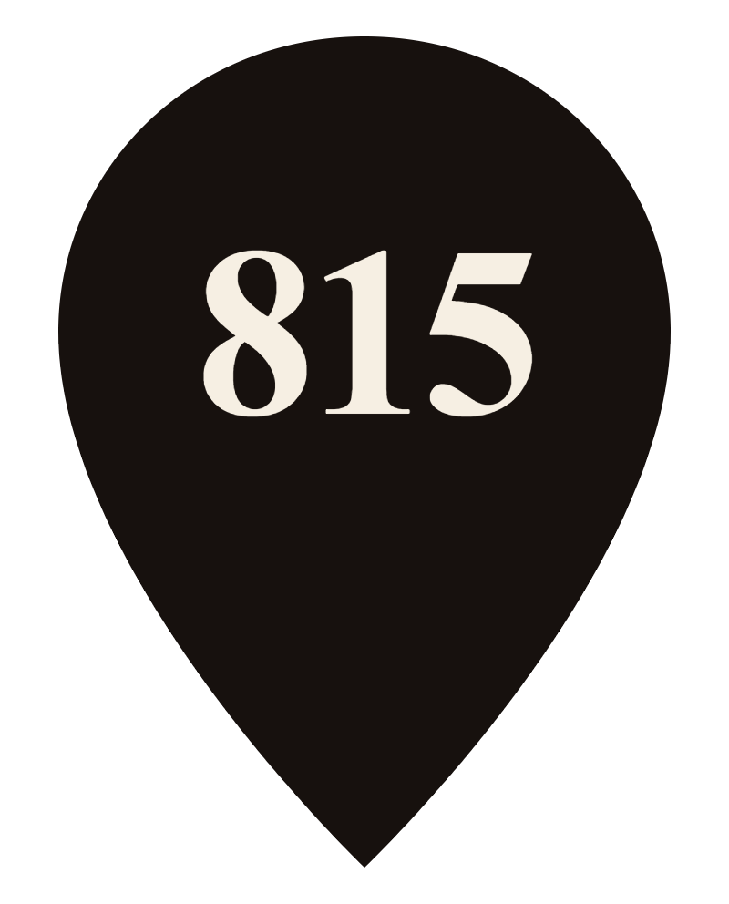
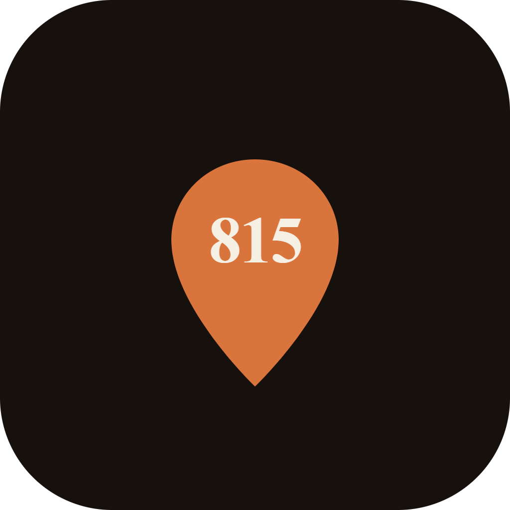
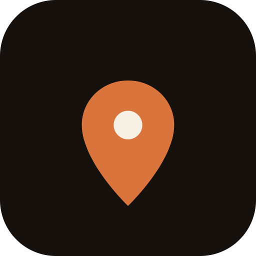
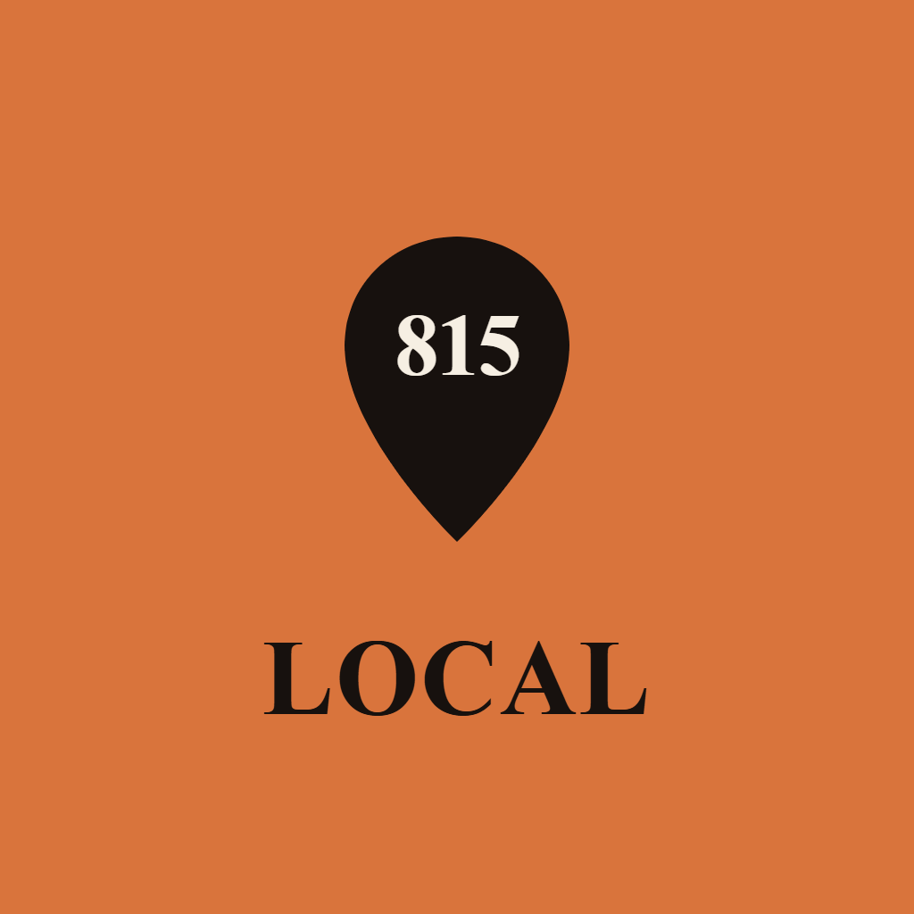

815 Local — the Pin direction · everything you need to drop the logo anywhere
Every logo below comes in two formats. The rule of thumb: reach for SVG wherever the tool accepts it (it stays razor-sharp at any size), and use PNG everywhere else. Both have transparent backgrounds unless noted.
For screens & print
Infinitely scalable — never blurry, never pixelated. The brand fonts are built into the file, so it looks identical on any computer, even offline.
Use for: your website & favicon, anything going to a printer (signs, stickers, shirts), and design tools like Canva and Figma.
For everyday use
A standard image file that works everywhere with no fuss. These are exported at high resolution so they stay crisp.
Use for: Google Docs & Word, email signatures, slide decks, social posts, and anywhere "insert image" expects a photo.
Your default, go-to logo. Use the editorial version most of the time.
Just the symbol — for when the full name doesn't fit or is already nearby.


Pre-built at the exact sizes these platforms ask for. These have solid backgrounds on purpose.



If you ever need to match the logo by hand (backgrounds, text, buttons).
Where the files live: the matching files are in the svg/ and png/ folders next to this page (e.g. svg/lockup-editorial.svg, png/lockup-editorial.png). To use one: in most apps choose Insert → Image and pick the file, or drag it straight in. Quick rule — SVG if it's offered, PNG if not.